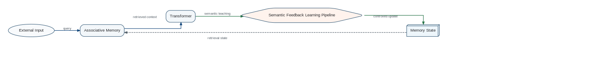

Cognitive separates semantic reasoning, associative retrieval, persistent memory state, and self-learning while connecting them through explicit typed interfaces.
Cognitive Architecture — Functional Overview

Operation asymmetry
| Operation | Architectural purpose | Canonical owner |
|---|---|---|
| READ | Retrieve context without changing memory | Section 10.1 |
| UPDATE | Incorporate semantic learning into Memory State | Section 10.1 |
The release-blocking READ/UPDATE invariants are defined canonically in Section 10.1 and in state/canonical/invariants.yaml.
First-class self-learning process
The Semantic Feedback Learning Pipeline is an independent architectural object with explicit stages, contracts, invariants, and future extension points for consolidation, replay, forgetting, structural plasticity, and evaluation.